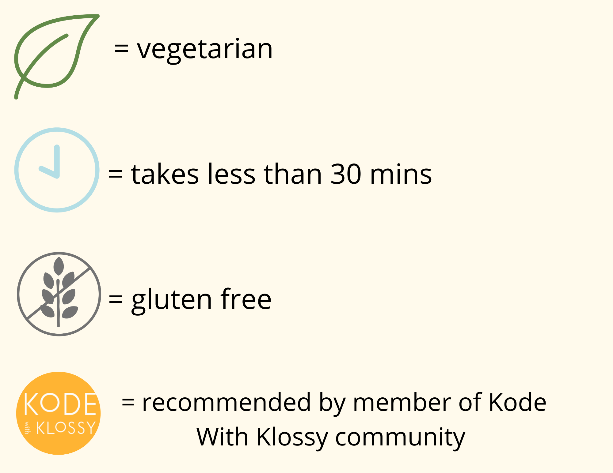

China: Egg Drop Soup


China: Soy Sauce Chicken

India: Biryani

India: Dal Makhani


India: Halwa (Homemade Recipe by Nithya Kondagari)


Japan: Mochi


Nepal: Momo (Homemade Recipe by Ansuya)

Korea: Bibimbap


Pakistan: Beef Kofta Curry

Taiwan: 三杯鸡 San Bei Ji (Homemade Recipe by Rebecca Austin)


Uzbekistan: Lagman

Vietnam: Bánh Canh

Vietnam: Bánh Cuốn

Vietnam: Vegan Bánh Xèo


